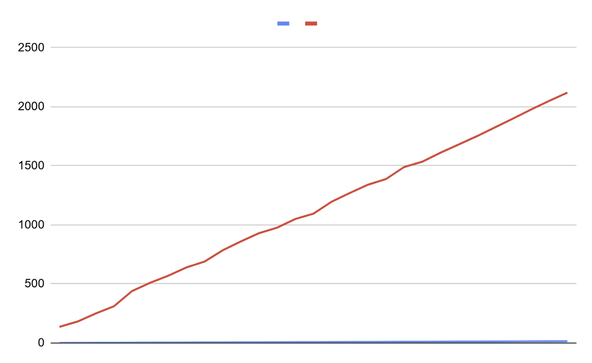

<div class="textcontainer">
<p class="margin"> </p>
<h3>Week 6: Electronic Inputs</h3>
<h4>Assignment 1: Capactive Sensor<h4>
<img src="./cs.jpeg" alt="capacitive sensor" style="width:300px;height:300px;">
<img src="./graph.png" alt="capacitive sensor graph" style="width:550px;height:400px;">
<br></br>
I built a capacitive sensor using copper tape and a small bottle. By measuring the capacitance between the copper tape and ground
I was able to detect when more water was added to the bottle, as the capacitance increased with more water.
I calibrated the sensor by plotting the capacitance values against the water in the bottle (increments of 3ml)
and found the above correlation. There is a linear relationship between water amount and capacitance with a platteau effect at 209
capacitance since the water surpasses the level of the sensor at that point.
<br></br>
<h4>Assignment 2: [Use + Calibrate Another Sensor]</h4>
<img src="./us.jpg" alt="Ultrasonic sensor" style="width:300px;height:300px;">

<br></br>
I tested and calibrated an ultrasonic distance sensor. I measured the distance from the sensor to a flat object in increments of
1 inch from 1 to 15 inches. I found that the sensor's readings were extremely linear, showing that there is a constant relationship
between the actual distance and the sensor's reading. Additionally, I programmed a RGB LED to light up red when the distance
is greater than 8 inches, yellow when the distance is greater than 10 inches, and green when the distance is greater than 12 inches.
This shows how the sensor can be used to trigger other components based on its readings.
<br></br>
</div>